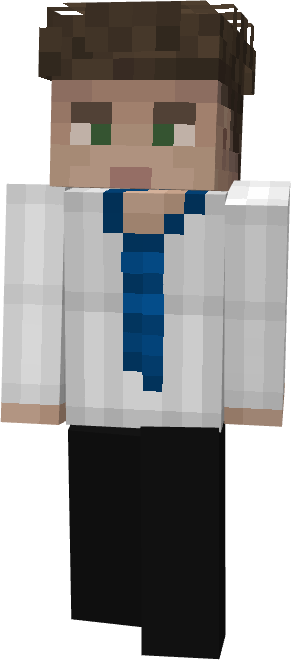

Ethan mesure environ 1m75, avec une carrure simple forgée par le travail. Ses cheveux châtains sont souvent en bataille, et ses yeux verts restent constamment attentifs.
Il porte des vêtements pratiques et usés mais entretenus. Sa sacoche médicale, modeste, est toujours parfaitement organisée.
Pragmatique et direct, Ethan agit vite et efficacement. Il préfère l’action utile à la théorie parfaite. Sociable sans être expansif, il inspire confiance par sa simplicité et son honnêteté.
Ethan Caldwell est né le 22 novembre 1868 dans le Massachusetts, au sein d’un foyer modeste et discret. Élevé par sa mère, guérisseuse sorcière indépendante, il grandit dans un environnement où la magie n’avait rien de spectaculaire, mais tout d’essentiel. Très tôt, il comprend que le monde magique américain repose sur des règles strictes : rester caché, ne jamais attirer l’attention des Non-Majs, et surtout ne jamais prendre la magie à la légère. Son enfance se déroule dans l’observation plutôt que dans l’apprentissage direct. Assis dans un coin de la pièce, il regarde sa mère travailler, mémorisant des gestes simples : comment nettoyer une plaie, comment calmer un patient, comment parler pour rassurer avant même d’agir. Un soir d’hiver, alors qu’un voisin sorcier souffrait d’une brûlure due à une potion mal maîtrisée, Ethan resta éveillé jusqu’au milieu de la nuit, tenant une lampe pendant que sa mère travaillait ; ce souvenir, banal en apparence, marqua profondément sa perception du métier. Sa première manifestation magique survient à neuf ans, lorsqu’il tente instinctivement d’atténuer une brûlure sur sa propre main. La douleur diminue brièvement, sans précision ni contrôle, mais suffisamment pour confirmer une prédisposition naturelle tournée vers le soin plutôt que vers la puissance brute. À son entrée à Ilvermorny, il est réparti chez les Serpents Cornus, où il se montre sérieux sans jamais chercher à se démarquer. Il n’est pas le plus brillant en théorie, oubliant parfois des détails ou confondant certaines notions, mais il compense par une compréhension rapide des situations concrètes. Lors d’un exercice encadré, il se distingue en stabilisant un camarade légèrement blessé avant même que l’intervention du professeur ne soit nécessaire, non pas par maîtrise parfaite, mais par réflexe. Il prend également l’habitude de rester après certains cours pour observer le rangement des équipements ou poser des questions simples mais pertinentes, préférant comprendre le “pourquoi” plutôt que réciter le “comment”. Après sa scolarité, Ethan refuse les voies institutionnelles et choisit un apprentissage plus rude mais plus formateur. Pendant plusieurs années, il accompagne différents guérisseurs indépendants à travers le Massachusetts, intervenant dans des situations variées : morsures de créatures mineures, effets secondaires de potions mal dosées, blessures dues à une magie mal contrôlée. Il apprend à travailler avec peu de moyens, à improviser lorsque les ressources manquent, et à garder la tête froide face à des patients paniqués. Une habitude lui reste d’ailleurs de cette période : vérifier systématiquement deux fois ses fioles avant chaque intervention, après avoir un jour utilisé une potion mal étiquetée qui, sans être grave, lui valut une correction mémorable de son mentor. Ces années forgent son approche : directe, efficace, sans recherche de perfection inutile. En 1894, à seulement 25 ans, Ethan rejoint Ilvermorny en tant que médicomage. Il sait qu’il n’est pas le plus érudit ni le plus expérimenté sur le papier, mais il apporte avec lui quelque chose de plus rare : une expérience concrète du terrain, acquise là où il n’y avait souvent personne d’autre pour intervenir, et une certitude simple — agir quand il le faut vaut toujours mieux que hésiter trop longtemps.
Ethan ne s’est jamais imaginé dans une position prestigieuse ou reconnue. Pour lui, la médicomagie n’a rien d’une vocation héroïque, mais tout d’un métier nécessaire, presque évident. Depuis ses années sur le terrain auprès de guérisseurs indépendants, il a développé une conviction simple : un bon médicomage n’est pas celui qui impressionne, mais celui qui intervient correctement au moment où il le faut. Avant même son arrivée à Ilvermorny, il se fixe une ligne de conduite claire : rester utile, stable et capable d’agir sans hésitation face à l’imprévu.
Habitué aux interventions avec peu de moyens, Ethan sait pourtant qu’il lui manque une base théorique plus solide. C’est justement ce qui motive sa venue à Ilvermorny : apprendre autrement que par l’expérience brute. Il souhaite comprendre davantage les mécanismes derrière ce qu’il a pratiqué pendant des années, sans pour autant perdre son approche instinctive du soin. Il a pris l’habitude d’analyser mentalement ses anciens cas, se remémorant certaines erreurs ou hésitations pour ne pas les reproduire.
Il ne cherche pas à faire carrière dans une institution ni à gravir des échelons politiques. Les structures officielles comme le MACUSA ne font pas partie de ses objectifs, qu’il considère trop éloignées de la réalité du terrain. Son ambition est volontairement simple : devenir un médicomage fiable, capable de travailler dans n’importe quelles conditions, et de protéger ceux qui en ont besoin sans se poser de questions inutiles. Pour lui, Ilvermorny représente moins une étape de prestige qu’un moyen de mieux faire ce qu’il a toujours essayé de faire : soigner correctement, et rester présent quand les autres hésitent.